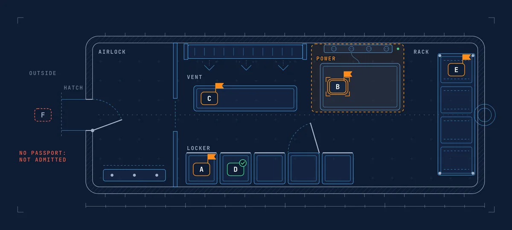
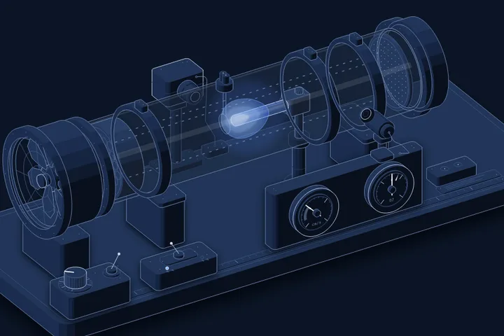
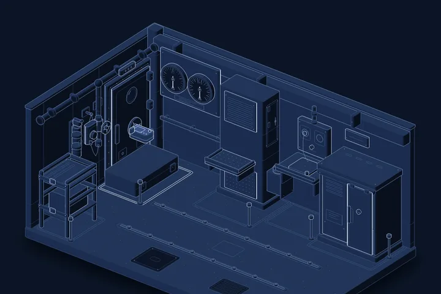
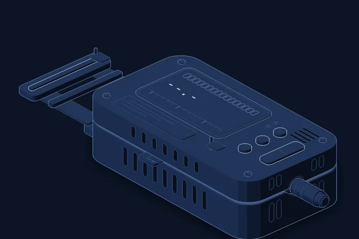
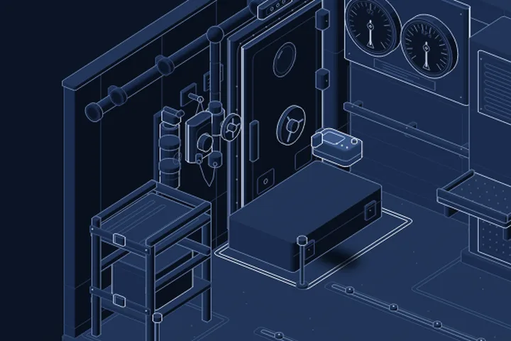

Same cargo, different environment
You have a passport to travel. Cargo that travels in space needs one too. Everything that flies needs evidence about its risks, and fire in microgravity is just one of them.
A Cargo Passport lists the evidence about the risks of the materials in a cargo item, for each environment along its journey. One example is a shipment from the ISS, in microgravity, to a lunar base, with lower gravity and enclosed spaces.
The air differs by place
Whether a test applies to a cargo item depends on more than the atmosphere. The passport reads the oxygen share and pressure of the vehicle, the place on board (a locker, the airlock, a spot by an air vent, a charging shelf) and whether the item is powered there. It keeps each part's material and thickness next to the tests that name it, and marks a test that does not name its gravity.
“a material that is acceptable in 24.1 percent oxygen may be flammable in 24.5 percent oxygen at the same pressure.”1
The passport for one item
Every cargo item gets a detailed record of its parts and their materials. The passport carries a link to that record.
The app reads the passport. SI searches NASA experiments and research for findings on each material. It weighs them against the conditions at the destination. You see what the evidence supports, where it shows a risk, and where there is none. People make the final call.
Portable science instrument
Handheld measuring device with its own battery.
Illustrative itemShown for International Space Station, Locker.
Locker
A closed stowage locker or fire-barrier bag, with the item switched off.
1 Evidence applies2 Conditions differ2 No evidence
Applies to every component here
-
Enclosure
PMMA cast sheet
Conditions differThe nearest records were gathered in different conditions:
In the Saffire IV and V tests, both concurrent PMMA samples (IV-2 and V-3) did not spread appreciably and instead remained fixed at the leading edge of the sample, advancing through surface regression only, which the authors call typical for thick fuels in low gravity but different from normal gravity.4
-
Battery pack
Lithium-ion cells
No evidenceNo record covers this material in this air.
The JSC 29353D handbook says small, low-voltage alkaline and coin batteries are still believed to be incapable of delivering the powers required for ignition, although larger batteries such as lithium-ion rechargeable batteries for portable electronic devices can certainly achieve higher power levels.5
Stowage bags can have flammable items stowed inside provided they do not contain ignition sources (such as electrical power) and are not susceptible to spontaneous ignition or chemical reaction, and the ISS and MPCV Programs allow fully certified and undamaged batteries, including lithium-ion rechargeable batteries, to be stowed inside such bags without additional containment.6
-
Gaskets
Silicone rubber, ~1.5 mm
Evidence appliesA record covers this air:
In a table of oxygen-concentration flammability limits at three total pressures, silicone is listed at 28% oxygen at 48.2 kPa, 23% at 85.3 kPa and 21% at 101.3 kPa.7
A NASA reduced-pressure-atmospheres report says that essentially all existing test data for flammability of flight materials are from 1-g testing, and that consequently minimal flammability data exists at varying oxygen concentrations in partial-gravity environments.8
Theory and experimental results indicate that oxygen flammability limits in lunar-g are lower than those measured in 1-g.9
Theoretical and experimental results have demonstrated that some materials that will not burn in 1-g will burn in 0-g with a low-speed flow or in partial gravity such as lunar gravity.10
-
Wiring
PTFE-insulated wire
No evidenceNo record covers this material in this air.
In a table of oxygen-concentration flammability limits at three total pressures, PTFE is listed with a maximum oxygen concentration (MOC) of 53% oxygen at 48.2 kPa, 46% at 85.3 kPa and 42% at 101.3 kPa.11
For flammability considerations, any high-power electrical wire is a potential ignition source, and any item that could cause sparks, such as a brush motor, is also considered a potential ignition source.12
-
Carry strap
Kevlar/PBI webbing, black
Conditions differThe nearest records were gathered in different conditions:
The webbings had maximum oxygen concentrations (MOCs) of 37% for the natural webbing and 35% for the black webbing at 8.2 psia.13
A record covers this air:
The nearest records were gathered in different conditions:
No record covers this material in this air.
Where it fits
Concept: not built, written as what would happen.
The flammability standard NASA-STD-6001B says Test 1 shall evaluate a material in the worst-case atmosphere to which it could be exposed.14 The JSC 29353D flammability guidance says hardware designed for use on ISS is acceptable for transport in pressurized areas of vehicles with higher oxygen concentrations, provided it is unpowered and stowed in a locker or validated fire barrier stowage bag, and that unpowered metal boxes are also acceptable.15 The same guidance says hardware not meeting these constraints is to be assessed for flammability at the higher oxygen concentration and pressure.16
One report says that historically, programs with up to 30 percent oxygen at 10.2 psia have accepted some flammable hardware by material usage agreement, based on the hardware being largely crew-tended while in use and stowed in a nonflammable container when not in use.17 The passport would not replace these procedures: it would carry their results with the item and flag when the place or the air no longer matches them.
Same item, new conditions, same questions
The same method can work on Earth too, in planes and submarines.
Examples and stories
Four stories from the shelf. Each follows what the experiments tell us and what is still unknown.
-

Example · Concept The whole vehicle Suppose every item has a passport and a tag that says where it is. Then the whole vehicle could be seen at once. -

Story · Partly data The quiet fire Could a fire in weightlessness burn in a way that is easy to miss? -

Story · Partly data Does Moon-base air make space fires worse? How might the air planned for a Moon base change how a fire starts and spreads? -

Story · Hypothesis What does a battery fire do in orbit? What would an overheating battery do in weightlessness? -

Story · Data What did the big Cygnus fires show? What did the large fires lit in an uncrewed cargo vehicle show about fire growth in space?
How a story is born
Collect evidence
A direction gets its evidence: short quotes from NASA records and papers.
Pass the gates
Every quote is checked against its source before the text is accepted.
Publish
The story joins the shelf with its evidence status and what it leaves open.
How we keep it honest
- Every sentence with a number mark links to a verbatim quote and its source.
- A program opens each link and checks that the quote is on the page.
- A language-model judge checks that each claim says no more than its quote.
Today the published stories cite 70 claims from 34 sources.
What this page does not show
- The instrument is an illustrative item, not a record.
- Registration, tags that report where an item is and whole-vehicle monitoring are concepts, and nothing here says they exist.
- Each cited sentence reports what one source says, for the conditions that source names.
- A result for one material, thickness, pressure or atmosphere does not stand in for another.
- The passport flags evidence and gaps, it gives no verdict, and people decide.
Sources
- Flammability Configuration Analysis for Spacecraft Applications, JSC 29353D (December 2024) Source page · Document
- Impacts of Reduced Pressure Atmospheres on Environmental Control and Life Support Systems (ECLSS) Architectures (NASA/TM-20260003925, NESC-RP-20-01610) Source page · Document
- Impacts of Reduced Pressure Atmospheres on Environmental Control and Life Support Systems (ECLSS) Architectures (NASA/TM-20260003925, NESC-RP-20-01610) Source page · Document
- Fire Safety Implications of Preliminary Results from Saffire IV and V Experiments on Large Scale Spacecraft Fires (ICES-2021-266) Source page · Document
- Flammability Configuration Analysis for Spacecraft Applications, JSC 29353D (December 2024) Source page · Document
- Flammability Configuration Analysis for Spacecraft Applications, JSC 29353D (December 2024) Source page · Document
- Pressure Effects on Oxygen Concentration Flammability Thresholds of Materials for Aerospace Applications Source page · Document
- Impacts of Reduced Pressure Atmospheres on Environmental Control and Life Support Systems (ECLSS) Architectures (NASA/TM-20260003925, NESC-RP-20-01610) Source page · Document
- Impact of Lunar Gravity on Material Flammability Source page · Document
- Material Flammability at Lunar and Martian Gravity Source page · Document
- Pressure Effects on Oxygen Concentration Flammability Thresholds of Materials for Aerospace Applications Source page · Document
- ISS Safety Requirements Documents: International Space Station Program (Baseline), SSP 51721 Source page · Document
- Webbings for Use in Elevated Oxygen Environments (NESC Technical Bulletin No. 26-05, revised) Source page · Document
- NASA-STD-6001B w/ Change 3: Flammability, Offgassing, and Compatibility Requirements and Test Procedures (base version 2011-08-26, Change 3 dated 2025-06-09) Source page · Document
- Flammability Configuration Analysis for Spacecraft Applications, JSC 29353D (December 2024) Source page · Document
- Flammability Configuration Analysis for Spacecraft Applications, JSC 29353D (December 2024) Source page · Document
- Impacts of Reduced Pressure Atmospheres on Environmental Control and Life Support Systems (ECLSS) Architectures (NASA/TM-20260003925, NESC-RP-20-01610) Source page · Document